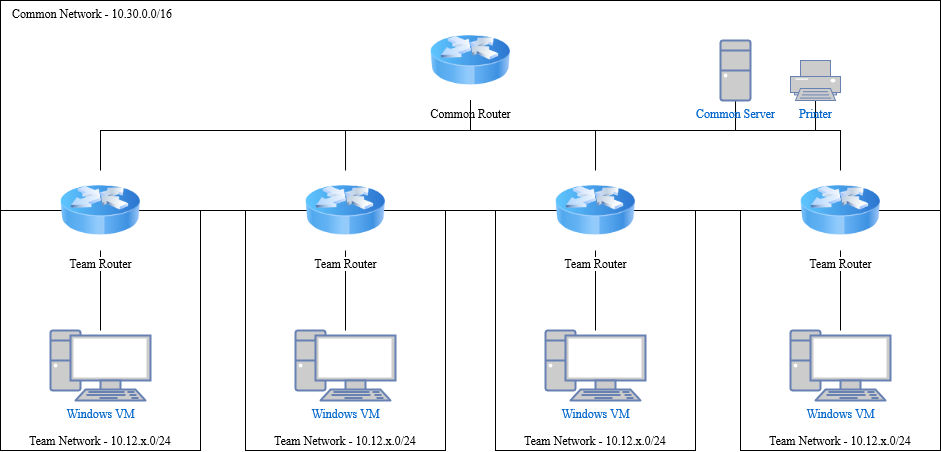
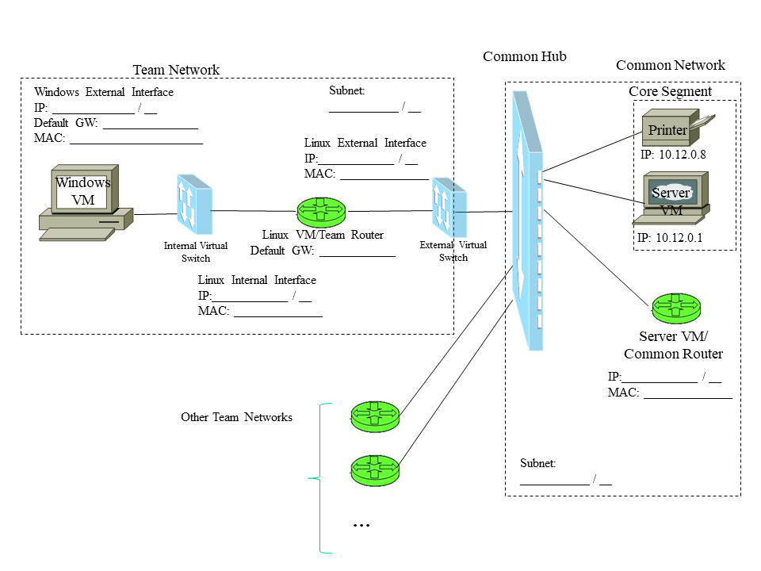

Labo 4: Introduction à la configuration réseau et à la capture de paquets
GEF330 hiver 2021
Objectifs
Ce labo vise à:
- vous familiariser avec la configuration d’un inter-réseau
- effectuer un examen préliminaire du protocole ARP
Introduction
Ce labo élabore sur les principes de réseautage fondamentaux et sur les techniques de diagnostique déjà discutée. Vous allez bâtir un petit réseau composé de deux sous-réseaux et branchés en un plus grand réseau à l’aide d’un routeur. Vous examinerez les paquets qui circulent au travers d’une passerelle vers un réseau éloigné. L’emphase sera placée sur l’interaction entre les couches 2 et 3 de la pile protocolaire permettant les communications réseaux. Vous examinerez en outre le protocole ARP en plus de détails.
Partie 1 - Bâtir un petit inter-réseau
Vous devez créer un petit réseau composé de deux sous-réseaux distincts: votre réseau d'équipe (Team Network) et le réseau commun (Common Network). Prenez le temps de planifier d'abord la structure du réseau. Chaque équipe d'étudiants mettra en place un réseau d'équipe qui à son tour sera mis en réseau avec d'autres réseaux d'équipe et le réseau commun. Le résultat final sera, que bien que chaque équipe ne connecte que deux sous-réseaux ensemble, l'inter-réseau résultant inclura tous les sous-réseaux d'équipe plus le réseau commun.
Notez que pendant la majeure partie du cours, le réseau commun fait partie de notre réseau local. Dans ce laboratoire, cependant, le réseau commun joue le rôle d'Internet ou du réseau étendu (Wide Area Network). La disposition de routage souhaitée est illustrée à la figure 1. (Notez qu'il s'agit d'une vue considérablement simplifiée et n'inclut pas la plupart des périphériques utilisés pour implémenter réellement notre réseau).

Figure 1 - Disposition de routage pour Labo 4
Pour nos besoins, nous souhaitons inclure notre serveur Telnet et quelques autres dispositifs. L'inter-réseau que nous allons construire (y compris l'infrastructure de laboratoire sous-jacente) est partiellement décrit dans la figure 2 et doit avoir les propriétés suivantes:
- Rappelez-vous votre valeur unique x: ___
- Votre Team Network: 10.30.x.0/24
- Votre VM Windows sera sur ce sous-réseau et aura une adresse IP 10.30.x.20.
- Un Team Router dont les interfaces sont 10.30.x.1 and 10.12.x.30.
- Dans ce laboratoire, la machine virtuelle Linux jouera le rôle du Team Router.
- Un réseau commun (Common Network): 10.12.0.0/16
- Une machine virtuelle du serveur central (Core Server VM) à l'adresse 10.12.0.1.
- Une machine virtuelle du routeur commun (Common Router VM) à l'adresse 10.12.x.1.
- Dans un vrai réseau de cette nature, chaque routeur d'équipe se connecte à un port distinct sur le routeur commun.
- Pour simuler cela avec l'infrastructure existante, la VM du serveur est aliasée avec plusieurs adresses IP qui lui permettent de répondre et d'effectuer le routage pour chaque réseau d'équipe.
(#1) Pourquoi utilisons-nous 10.30.x.0 pour le réseau d'équipe? Pourquoi ne pouvons-nous pas utiliser uniquement certaines des adresses du réseau 10.12.0.0?
Commencez à remplir les espaces vides de la figure 2, en particulier les adresses IP, les sous-réseaux et les passerelles. Notez que vous avez reçu des adresses réseau en notation CIDR (X.X.X.X/Y), où Y vous indique le nombre de bits dans le masque de sous-réseau.
Si vous n'utilisez pas les masques de sous-réseau appropriés, ce laboratoire ne se comportera pas comme prévu.

Figure 2 - Configuration du réseau pour le Labo 4
Vous disposez des matéiaux suivants:
- Une VM Windows
- Une VM Linux, à utiliser uniquement pour le routage.
- Infrastructure réseau commune:
- Le Virtual Common Hub
- Un segment central de réseau commun contenant:
- Une machine virtuelle Core Server
-
Une imprimante principale
- Un segment de réseau commun d'équipe contenant la VM / routeur Team Common Server
- Les commutateurs internes et externes, fonctionnant en mode Hub et donc invisibles.
Une fois que vous avez rempli toutes les adresses IP, passerelles et masques de sous-réseau de la figure 2, suivez les étapes ci-dessous pour que votre réseau soit opérationnel. Consultez un instructeur de laboratoire si vous rencontrez des difficultés.
Configuration du ‘Routeur’
Ce laboratoire est généralement effectué dans le laboratoire de sécurité informatique sur le campus à l'aide d'un routeur Cisco 851 physique. Ce n'est pas actuellement une option, donc le laboratoire a été adapté pour l'enseignement à distance. Nous utiliserons la machine virtuelle Linux comme routeur et configurerons notre réseau virtuellement plutôt que physiquement.
- Les routeurs physiques ont généralement un port WAN et un certain nombre de ports LAN. Le port WAN est généralement la connexion du routeur au plus grand réseau, tandis que les ports LAN sont utilisés pour un ou plusieurs sous-réseaux plus petits gérés par le routeur. (Jetez un œil à l'arrière de votre routeur Internet domestique et vous verrez probablement un port WAN et quatre ports LAN. Dans ce cas, les ports LAN appartiennent probablement tous au même sous-réseau.)
- Mettez sous tension la machine virtuelle Linux, connue pour le reste de ce labo sous le nom de Team Router.
- Dans cet atelier, l'interface Internal jouera le rôle du port LAN du routeur, tandis que l'interface External jouera le rôle du port WAN.
- La configuration d'un routeur physique varie considérablement selon la marque et le modèle de l'appareil. Le SSH, les interfaces Web et les normes de fabrication propriétaires existent tous dans le monde du routage. Votre routeur WiFi domestique offre probablement une configuration Web, tandis que le routeur Cisco 851 que nous utilisons normalement pour la version en personne de ce laboratoire dispose d'une ligne de commande Telnet propriétaire, basée sur du texte. Vous pouvez accéder directement à la machine virtuelle Linux, ce qui facilite beaucoup cette partie.
- Configurez les adresses IP des interfaces internes et externes. Revenez aux Lab 1 et Lab 2 si vous ne savez pas comment.
- Utilisez
ip addr pour attribuer les adresses IP elles-mêmes. Reportez-vous à la figure 2 pour savoir qui est quoi.
- Utilisez
ip set link pour activer chaque interface.
- La machine virtuelle Linux doit être chargée d'agir comme un routeur entre ces deux réseaux. Nous explorerons cela plus en détail dans le Labo 5. Pour l'instant, utilisez la commande suivante pour activer le routage:
-
sudo sysctl net.ipv4.ip_forward = 1
- Cette commande n'est pas persistante. Si vous redémarrez votre VM, vous devrez l'exécuter à nouveau pour réactiver le routage.
-
(#2) Cette commande est très binaire: est-ce que je transfère des paquets, oui ou non? Comment pourrions-nous contrôler spécifiquement les types de paquets autorisés à entrer ou à sortir de notre réseau?
- Dans ce cas, vous avez utilisé un bureau VM pour configurer votre routeur. Cependant, dans la plupart des cas, vous utiliserez SSH, Telnet ou une interface Web. Dans ces cas, vous devez être très prudent lorsque vous modifiez l'interface connectant votre poste de travail et l'appareil.
- Avec les interfaces sur les réseaux Team et Common et le transfert IP activé, le Team Router peut désormais transmettre des paquets entre les deux réseaux. Cependant, il ne dispose pas des informations nécessaires pour transmettre des paquets à d'autres réseaux d'équipe. Votre Team Router doit savoir où envoyer les paquets s'il ne dispose pas d'un itinéraire spécifique vers leur destination. De même, la machine virtuelle serveur, qui dans ce cas agit comme un routeur commun entre tous les réseaux d'équipe, doit savoir où envoyer les paquets destinés à votre réseau d'équipe. Notez que bien que le Common Router connaisse votre Team Router en raison de son adresse sur le Common Network, il n'a aucune connaissance de l'espace IP privé utilisé au sein de votre Team Network interne.
- Ouvrez la page de manuel
ip route sur la machine virtuelle Linux.
-
(#4) Donnez la commande pour définir la passerelle par défaut de votre Team Router vers Common Router à 10.12.x.1. Utilisez la commande pour vous assurer que la passerelle est définie.
-
(#5) Donner la commande nécessaire pour créer une route depuis le routeur commun vers votre Team Router. Cette commande serait exécutée sur le serveur / routeur lui-même.
- Maintenant que votre Team Router est prêt à fonctionner, configurez votre adaptateur externe de la machine virtuelle Windows pour se connecter au Team Router nouvellement configuré. Notez que cette fois, vous devrez également inclure la passerelle par défaut. Reportez-vous à votre Figure 2 complétée si vous n'êtes pas sûr des paramètres.
- À partir de maintenant, vous souhaiterez peut-être envisager d'enregistrer votre trafic afin de pouvoir vous y référer ultérieurement lorsque l'environnement de laboratoire a moins de trafic. Consultez la partie 4 de Labo 2 si vous avez besoin d'un rappel.
- Maintenant que votre réseau est opérationnel, effectuez les tests suivants à partir de votre machine virtuelle Windows:
- Ping sur l'interface LAN du Team Router (10.30.x.1)
- Envoyez un ping à l'interface WAN de Team Router (10.12.x.30)
- Envoyez un ping au routeur commun de l'équipe (10.12.x.1)
- Telnet de votre machine virtuelle Windows au serveur Telnet (10.12.x.1) en utilisant alice / secret
- Depuis le compte d'Alice, envoyez un ping à votre VM Windows (10.30.x.20)
-
(#6) Signalez les difficultés et / ou les changements que vous avez dû faire pour que votre réseau soit opérationnel correctement; soyez spécifique. Indiquez clairement si vous n'avez eu aucun problème.
Reniflage avec windump
-
(#7) Familiarisez-vous à nouveau avec windump, en particulier avec les commutateurs -i, -e, et -n; fournissez un résumé de ces commutateurs dans votre rapport de laboratoire.
- Lors de l'exécution de windump dans ce laboratoire, nous serons intéressés par le format numérique des adresses MAC et IP. Vous devez utiliser le commutateur -n pour éviter de longs délais. Vous remarquerez peut-être également qu'il y a beaucoup de trafic réseau qui brouille les choses généré par Windows qui rend difficile la visualisation du trafic qui vous intéresse (par exemple, vos paquets telnet ou ping). Vous devriez filtrer ce brouillage en spécifiant les ordi et ports TCP qui sont associés avec ce traffic. Par exemple, si vous trouvez votre sortie encombrée de paquets Windows relatifs aux ports 137 et 1900, vous pouvez utiliser la commande:
windump -n "pas le port 137 et pas le port 1900" . Cela éliminera le trafic sur ces ports de votre sortie.
- Alternativement, vous pouvez filtrer ce que vous voulez voir en choisissant les ordi et protocoles/ports qui vous intéresse. Par exemple, si vous souhaitez uniquement le trafic telnet pour les hôtes de votre sous-réseau local, vous pouvez utiliser:
-
windump -en "tcp port 23 et net 10.12.x.0 / 24"
- Vous pouvez également choisir d'enregistrer tout le trafic réseau actuel dans un fichier pcap à l'aide de
windump -w , puis appliquer des filtres aux données capturées comme vous le souhaitez.
- Annotez le diagramme du réseau (Figure 2) avec les informations suivantes:
- Adresses IP pour toutes les interfaces sur l'inter-réseau (si ce n'est déjà fait), et
- Adresses MAC de votre sous-réseau de réseau local.
- Assurez-vous que le diagramme est reproduit dans votre rapport de laboratoire (en tant qu'annexe A). Le fichier source est fourni au bas de cette page.
-
(#8) Quel est le nombre maximum d'hôtes pouvant être inclus sur chacun des deux sous-réseaux?
Partie 2 - Analyse de capture de trafic réseau
Le protocole ARP (Address Resolution Protocol)
Rappelez vous le labo 3 :
- Comme vous le savez, on utilise ARP sur le réseau local pour découvrir l’adresse MAC correspondante à une adresse IP spécifique. ARP permet de faire le mappage essentiel entre la couche 2 et la couche 3 de la pile protocolaire. Lorsqu’un ordi démarre et se joint au réseau, il connaît ses propres adresses MAC et IP, mais il ne connaît pas celles des autres machines. Les applications qui comptent sur le réseau ne savent pas quelles technologies sont utilisées sur le LAN; elles ne connaissent habituellement que les adresses IP. Comment est-ce qu’un ordi peut savoir quelle adresse MAC utiliser pour communiquer avec une adresse IP spécifique? L’ordi utilise une diffusion générale ARP sur le segment local. Il diffuse un paquet “ARP who-has” demandant si un ordi est connecté à la machine utilisant l’adresse IP. Tous les ordis sur le segment local écoutent ces diffusions et si l’un deux remarque que la diffusion concerne sa propres adresse IP, il répond avec un paquet “ARP reply” qui est envoyé au demandeur original avec son adresse MAC. Le demandeur qui a envoyé la diffusion ARP who-has connait maintenant l’adresse MAC correspondante à l’adresse IP et peut envoyer des trames directement à celui-ci. Ce mappage d’adresses ARP<—>IP est stocké dans un cache ARP local.
(#9) Observez les ARP who-has maintenant générées; à quelle IP sont-elles adressées? Pourquoi cette adresse IP?(#10) Quelle adresse MAC est utilisée comme destination dans les diffusion ARP who-has? Qu’est-ce que cette adresse a de particulier?- Regardez l’en-tête d’une des demande icmp echo-request envoyée au serveur d’équipe commun.
(#11) Quelle MAC adresse est utilisée ?(#12) A quel équipement appartient cette adresse MAC ? Est-ce l’equipement auquel vous vous attendiez ?(#13) Est-ce que l’adresse MAC correspond à la machine ayant l’adresse IP utilisée dans le paquet? Si non, à qui appartient l’adresse IP ?(#14) Pourquoi utilise-t-on cette adresse MAC?
- Nous avons remarqué des diffusions (broadcast) à l’ensemble du segment LAN, ainsi que les adresses MAC utilisées. Certain protocoles font aussi diffusion à l’ensemble d’un sous-réseau IP (comme DHCP).
(#15) Quelle adresse IP serait utilisée pour faire diffusion (broadcast) sur le sous-réseau d’équipe?(#16) Quelle adresse IP serait utilisée pour faire diffusion (broadcast) sur le réseau commun?
(#17) Est-ce que vous pensez que les paquest ARP traversent les commutateurs ou les concentrateurs? Expliquez votre raisonnement.(#18) Est-ce que vous pensez que les paquets ARP traversent les routeurs? Expliquez votre raisonnement.
Remise:
Diagramme à utiliser pour le rapport
Le rapport de ce laboratoire doit être soumis via Moodle, avant le 3 mars.
Copyright © Mariam El Mezouar 2021